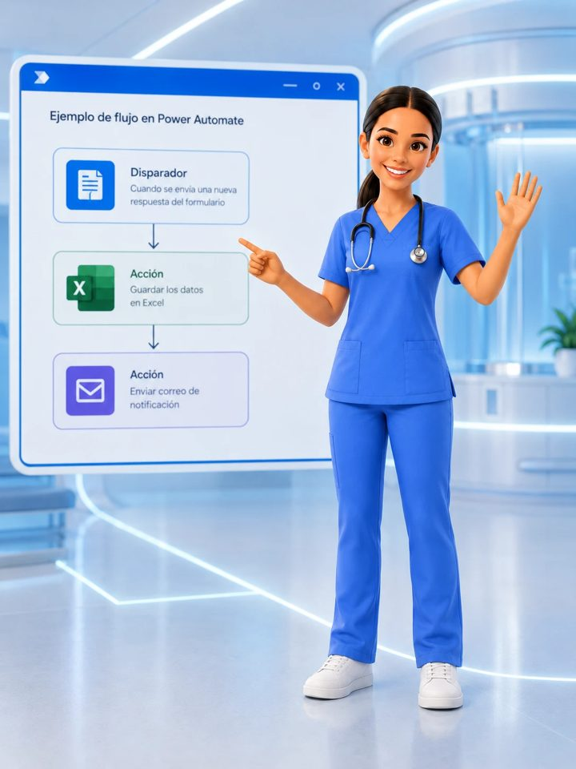

RAG
Dashboard legislativo
Análisis temático automatizado y afinidad temática sobre información del Senado.
Una selección de desarrollos, iniciativas y mentorías en distintos sectores, del aula a la empresa y al territorio.
Análisis temático automatizado y afinidad temática sobre información del Senado.
Desarrollo humano, catalización e IA aplicada. Incluye 33 Virtudes, un juego de formación en valores potenciado con IA.
Automatización de procesos comerciales y administrativos con agentes inteligentes y flujos n8n.
Plataforma de exámenes con calificación asistida por LLM sobre el Business Motivation Model.
Demostraciones de IA local y validación de modelos en estaciones de alto desempeño con GPU y NPU.
Análisis automatizado por estudiante a partir de logs de la plataforma.
Cursos y laboratorios diseñados y desarrollados de principio a fin.
Diseñé y desarrollé de principio a fin un programa de capacitación en analítica de datos y automatización para profesionales de instituciones de salud de Bogotá, Cali y el oriente de Antioquia.

Laboratorio web con tutor de IA para la asignatura Gestión de la Infraestructura (UNIMINUTO): 15 casos reales, puntos únicos de falla, métricas y matriz de decisión de alternativas. Aceptado en la V Jornada de IA Minuto de Dios (2026).
Simulador formativo de casos de infraestructura TI con seguimiento del progreso de aprendizaje.
Modelos para analizar y mitigar la compactación del suelo en agricultura campesina de Boyacá.
Mentora en la comunidad educativa de Claro Modo IA: acompaño a docentes y estudiantes de escuelas conectadas en el uso de la inteligencia artificial con sentido pedagógico y responsable.
Sistema de medición y seguimiento de impacto de programas.
Chequeo interactivo de IA centrada en las personas.
Simuladores, juegos y laboratorios web que cualquier persona puede abrir y usar.